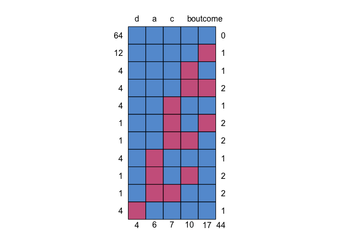

Using mice and furniture to understand missing data
I get a lot of questions about how to investigate missing values in a data set. So I’m putting this short post together to help me better explain how to handle it.
Importantly, working with missing data is a complex body of literature that investigates ways to handle the missing data in ways that help increase power, reduce bias, and are intuitive to interpret. As such, we will not dive into the in’s and out’s of missing data.
Yet, in applied statistics in the social sciences, we are often confronted with missing data of various sorts. So we cannot ignore it. We have to face it in some way. This post will highlight some basic ways to understand the missingness. Once we understand it well, in general, multiple imputation or a related method will be best. But again, we won’t go into depth here. At the end of the post I list a few helpful resources to better understand this area.
Quick Background
Generally speaking, the data (for any given variable) are missing in one of three ways:
- MCAR (Missing Completely At Random)
- MAR (Missing at Random)
- MNAR (Missing Not at Random)
MCAR
This is the truly random missing pattern. No variable is related to the missingness. That is, nothing measurable has to do with whether a data point is missing. For example, a malfunction of equipment in a lab often has nothing to do with the individual; it is random in regards to the individual. In those cases, MCAR is likely.
MAR
This is only random after controlling for the variables that are related to (or caused) the missingness. In this one, we have variables that we measured that are related to the missingness. We have information to help us curb the ill-effects of missing values.
MNAR
This one means the missingness could be predicted by at least one variable but we don’t have those variables measured. As such, this is where the results get biased because there is essentially a confounder that we should control for but can’t.
Using furniture::table1() with the missing indicator
Often, to show that the missingness is MAR, we want to show that some of our measures are related to the missing values. To do this, we can create a missing data indicator variable and use that within the furniture::table1() function as the grouping variable.
To show how to do this, we will use a ficticious data set that I make below that has some missing values using a custom function for that purpose.
library(tidyverse)
library(furniture)
set.seed(84322)
make_missing <- function(expr, prop_miss = 10){
var = eval(substitute(expr))
sample(c(var, rep(NA, prop_miss)), size = length(var), replace = TRUE)
}
df <- data.frame(
outcome = make_missing(rnorm(100)),
a = make_missing(rnorm(100)),
b = make_missing(rnorm(100)),
c = make_missing(runif(100)),
d = factor(make_missing(rbinom(100, 1, .5)))
)
head(df)## outcome a b c d
## 1 -0.4991754 0.2088084 -0.3231060 0.5190252 0
## 2 1.2741340 0.4494317 0.1999508 0.8334699 0
## 3 -1.3322922 -0.2704947 0.3160802 0.7321888 1
## 4 0.9607742 -0.8304570 -0.5268735 0.4855816 1
## 5 NA 1.3255738 NA 0.1120063 0
## 6 -0.1520798 -0.9871191 -0.3549730 0.5982557 0We can use mice::md.pattern() to get an idea of missing data patterns. This shows us that 64 individuals have no missing (the blue top row); the next row says 12 individuals had missing just on variable a with no other variables missing; row three shows 4 people have missing just on b; etc. Across the whole data set, there were 44 missing data points.
mice::md.pattern(df)
With this data set and our understanding of the missing data patterns, let’s create the missing variable indicator. To do so, we will select all of the variables that we’ll be using in the study.
df2 <- select(df, outcome, a, b, c, d)Next, we will create the missing variable indicator with the following function:
is_missing <- function(...){
ifelse(complete.cases(...), "Not Missing", "Missing")
}And assign it to the missing variable.
df2 <- df2 %>%
mutate(missing = is_missing(outcome, a, b, c, d))Finally, we can use that indicator as the grouping variable in table1(). We set na.rm = FALSE so we aren’t removing all the missingness and test = TRUE so we get tests of association. Because we may not have normally-distributed variables within the groups, we also set param = FALSE so we use the Kruskal-Wallis non-parametric test.
df2 %>%
group_by(missing) %>%
table1(outcome, a, b, c, d,
na.rm = FALSE,
test = TRUE,
param = FALSE)##
## ────────────────────────────────────────
## missing
## Missing Not Missing P-Value
## n = 36 n = 64
## outcome 0.413
## -0.3 (0.8) -0.1 (1.0)
## a 0.814
## 0.1 (0.9) 0.1 (1.0)
## b 0.343
## 0.1 (1.3) -0.1 (1.0)
## c 0.375
## 0.5 (0.3) 0.5 (0.3)
## d 0.513
## 0 16 (44.4%) 38 (59.4%)
## 1 16 (44.4%) 26 (40.6%)
## NA 4 (11.1%) 0 (0%)
## ────────────────────────────────────────In this data set, it looks like no variables are related to the missingness. This makes sense here since the missing values were set completely at random. If, however, we saw a variable that was related (e.g. p < .05), it means we could use that variable to better understand the missingness across the data set.
This result can be a good thing or a bad thing for us. Not having any variables associated just means it is not MAR, but could be MCAR or MNAR; one is great for us, the other is bad.
Conclusions
That’s it for this post. Here’s some good resources to learn more:
- Missing Data - see Little, R. J., & Rubin, D. B. (2014). Statistical analysis with missing data (Vol. 333). John Wiley & Sons.
micedocumentation